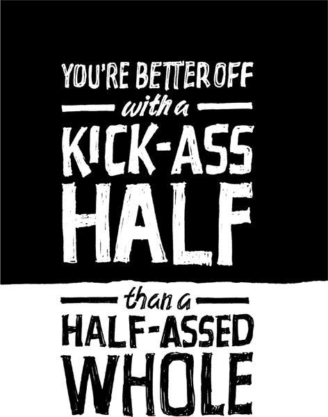

{% include JB/setup %}
{% raw %}
<div>

<h2 id="filepos78835" class="calibre19"><span class="calibre2"><a class="calibre13"></a><strong class="calibre14">Embrace constraints</strong></span></h2><div class="calibre4"></div>
<p class="calibre7">"I don't have enough time/money/people/experience." Stop whining. Less is a good thing. Constraints are advantages in disguise. Limited resources force you to make do with what you've got. There's no room for waste. And that forces you to be creative.</p>
<p class="calibre17">Ever seen the weapons prisoners make out of soap or a spoon? They make do with what they've got. Now we're not saying you should go out and shank somebody--but get creative and you'll be amazed at what you can make with just a little.</p>
<p class="calibre17">Writers use constraints to force creativity all the time. Shakespeare reveled in the limitations of sonnets (fourteen-line lyric poems in iambic pentameter with a specific rhyme scheme). Haiku and limericks also have strict rules that lead to creative results. Writers like Ernest Hemingway and Raymond Carver found that forcing themselves to use simple, clear language helped them deliver maximum impact.</p>
<p class="calibre17"><em class="italic1">The Price Is Right</em>, the longest-running game show in history, is also a great example of creativity born from embracing constraints. The show has more than a hundred games, and each one is based on the question "How much does this item cost?" That simple formula has attracted fans for more than thirty years.</p>
<p class="calibre17"><a class="calibre16"></a>Southwest--unlike most other airlines, which fly multiple aircraft models--flies only Boeing 737s. As a result, every Southwest pilot, flight attendant, and ground-crew member can work any flight. Plus, all of Southwest's parts fit all of its planes. All that means lower costs and a business that's easier to run. They made it easy on themselves.</p>
<p class="calibre17">When we were building Basecamp, we had plenty of limitations. We had a design firm to run with existing client work, a seven-hour time difference between principals (David was doing the programming in Denmark, the rest of us were in the States), a small team, and no outside funding. These constraints forced us to keep the product simple.</p>
<p class="calibre17">These days, we have more resources and people, but we still force constraints. We make sure to have only one or two people working on a product at a time. And we always keep features to a minimum. Boxing ourselves in this way prevents us from creating bloated products.</p>
<p class="calibre17">So before you sing the "not enough" blues, see how far you can get with what you have.</p>
<p class="calibre3"><a class="calibre16"></a></p><div class="calibre4"></div>
</div>

{% endraw %}

